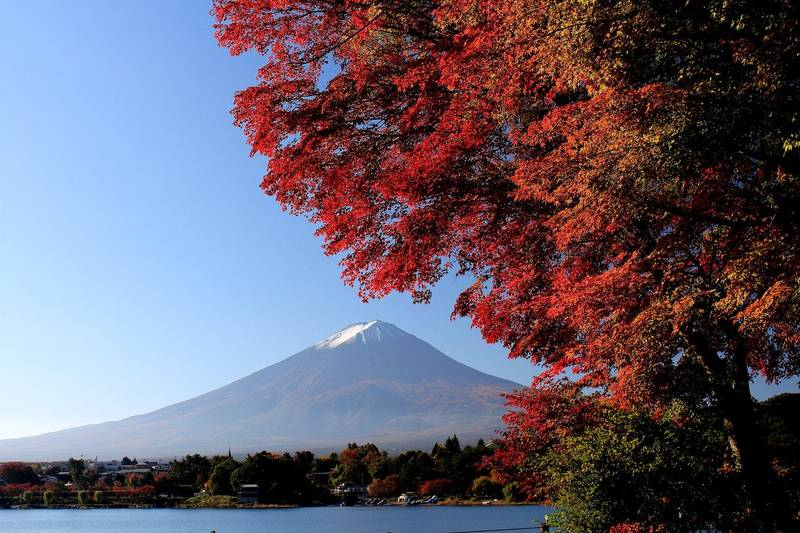
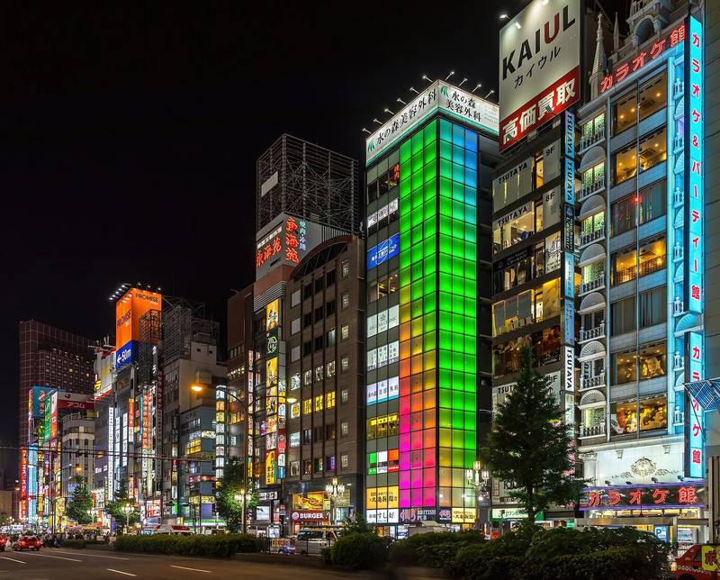
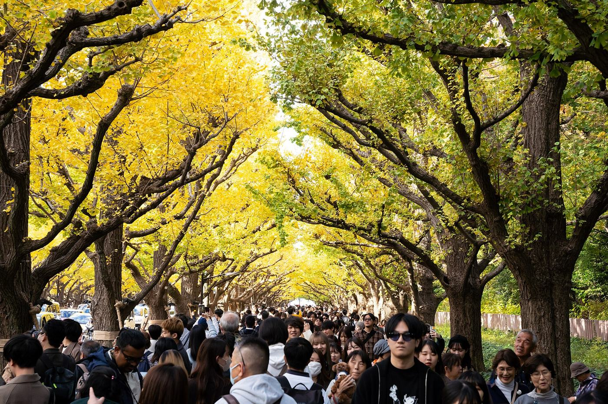

Neon, touge roads, maple temples, onsen, and a used Fujifilm to shoot it all. Your lists, mapped and timed.



Ticks, switches and budget edits are locked on this device until the password is entered once.